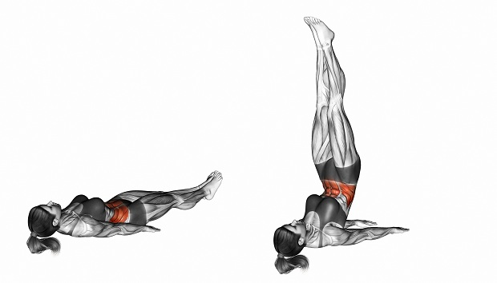
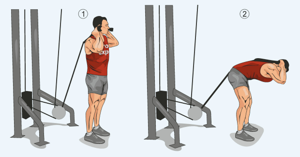
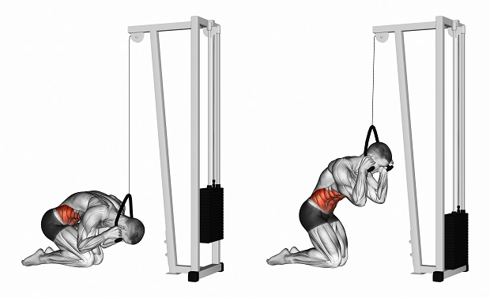
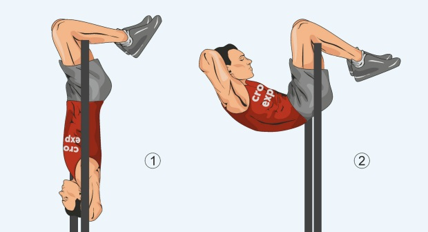
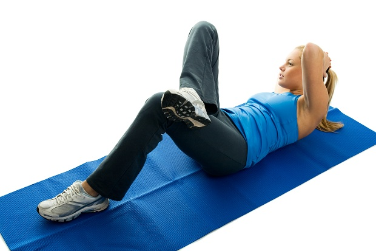
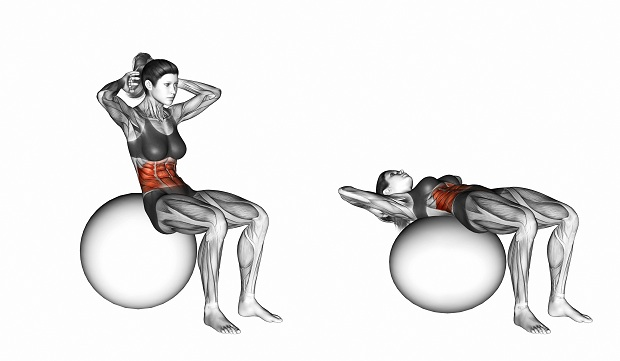

Скручивания на пресс
 Сразу хочу отметить, что скручивания – это не идентичное с подъемом корпуса или ситапом упражнение. В
скручиваниях нам не столь важна амплитуда, здесь абсолютно нет никакого смысла делать подъем корпуса до
прямого угла, сколько непрерывная работа мышц пресса и контроль за движением – для этого мы несколько
округляем спину в грудном отделе. Такой небольшой кифоз вполне допустим, и он не способствует увеличению
риска получить травму.
Сразу хочу отметить, что скручивания – это не идентичное с подъемом корпуса или ситапом упражнение. В
скручиваниях нам не столь важна амплитуда, здесь абсолютно нет никакого смысла делать подъем корпуса до
прямого угла, сколько непрерывная работа мышц пресса и контроль за движением – для этого мы несколько
округляем спину в грудном отделе. Такой небольшой кифоз вполне допустим, и он не способствует увеличению
риска получить травму.
Из-за этого я считаю скручивания упражнением №1 для развития мышц пресса. Оно достаточно простое, в нем легко почувствовать сокращение и растяжение работающей мышечной группы, большая часть его видов не требует дополнительного оборудования, и с помощью скручиваний Вы можете как следует проработать мышцы Вашего пресса буквально за 10-15 минут – отличный вариант для тех людей, кто не может выделить много времени на тренировки.
Классические скручивания
Наиболее простая с точки зрения соблюдения правильной техники вариация скручиваний пресса — классическая. Атлет, выполняющий упражнение, поднимает немного согнутый в верхней части (область лопаток и широчайших мышц спины) корпус из положения лежа. Выполняется следующим образом:
- Исходная позиция: атлет ложится на пол или коврик для фитнеса, ноги согнуты в коленях, плотно упритесь ступнями в пол, руки отведите за голову.
- Делая выдох, плавно поднимите верхнюю часть корпуса, не меняя положение поясницы и ягодиц – они остаются плотно прижатыми к полу. Верхнюю часть спины следует немного округлить, так Вам будет легче сконцентрироваться на сокращении мышц пресса.
- Плавно продолжайте подъем торса, пока не ощутите, как нагрузка достигла своего пика. На секунду задержитесь в этой позиции, чтобы дополнительно статически сократить мышцы.
- Начинайте опускаться вниз. Опускание корпуса должно быть подконтрольным. Не обязательно опускаться полностью на пол, лучше остановиться приблизительно в десяти сантиметрах от него, когда мышцы пресса будут наиболее растянуты. Работая в подобной сокращенной амплитуде, Вы увеличите эффективность этого упражнения, так как нагрузка будет в разы интенсивнее. Обычные скручивания на пресс
Обратные скручивания
Не менее эффективная разновидность упражнения — это обратные скручивания на пресс, акцентирующая основную часть нагрузки в нижней части пресса. Принципиальное различие с классическим вариантом заключена в том, что в обратных скручиваниях мы сокращаем пресс за счет поднятия ног, а не корпуса. Обратные скручивания могут выполняться как лежа на полу, так и лежа на специальной скамье головой вверх – кардинальных различий нет. Выполняется следующим образом:
- Исходная позиция: атлет ложится на пол или на наклонную скамью, держась руками за ее верхний край. Если Вы делаете упражнение на полу, руки рекомендуется держать выпрямленными вниз, они помогут Вам лучше контролировать движение. Ноги следует немного согнуть в коленях.
- Начинайте поднимать ноги вверх, делая при этом выдох и плавно приподнимая поясницу с поверхности – это обеспечит наилучшее сокращение мышц пресса.
- Плавно опустите ноги и низ спины вниз, делая вдох. Работать здесь лучше по той же схеме, что и в обычных скручиваниях, — в укороченной амплитуде с постоянным напряжением мышц.
Скручивания на наклонной скамье
Почти каждый современный тренажерный зал оборудован специальной скамьей с наклоном примерно в 30 градусов для проработки пресса, почему бы этим не воспользоваться? Тем более, что упражнение столь же эффективно, сколько и классические скручивания лежа. Выполняется следующим образом:
- Исходная позиция: расположитесь на наклонной скамье, ноги закрепите между валиками в верхней части скамьи, руки скрестите на груди.
- Делая выдох, начинайте делать скручивание, немного округляя верх спины. Биомеханика скручиваний на наклонной скамье практически идентична с классическом вариантом, поэтому здесь мы работаем в той же амплитуде.
- Плавно опускаемся вниз, делая вдох. Здесь можно работать в максимально возможной амплитуде с небольшой задержкой на скамье, так прямую мышцу пресса будет проще «прожать», каждый раз начиная движение из стартовой позиции. Более опытные спортсмены могут работать в этом упражнении с использованием дополнительного отягощения, держа диск от штанги или небольшую гантель в руках на уровне солнечного сплетения.
Скручивания в блочном тренажере стоя
Интересный вариант для тех, кто хочет разнообразить нагрузку. Преимущество блочного тренажера состоит в том, что нагрузка является непрерывной, и мышцы статически напрягаются даже в верхней позиции. Выполняется следующим образом:
- Исходная позиция: встаньте спиной к блочному тренажеру или кроссоверу, возьмитесь двумя руками за рукоять (удобнее всего выполнять с канатной рукоятью), расположите рукоять за головой на уровне шее.
- Начинайте движение корпусом вниз, округляя область лопаток и напрягая мышцы пресса. Опускаться следует до касания локтями бедер. Сделайте небольшую паузу в этом положении. Само собой, вес в тренажере следует выставить небольшой, иначе Вы рискуете получить травму позвоночника.
- Делая вдох, плавно начинайте разгибаться назад, одновременно с этим выпрямляя спину. Здесь мы работаем в полную амплитуду, допустима небольшая задержка в начальной точке.
Скручивания в блочном тренажере стоя на коленях
Скручивания в блочном тренажере стоя на коленях еще одна вариация упражнения, для которой понадобится верхний блок. Разница заключается в амплитуде – здесь она более короткая, поэтому многим будет проще прочувствовать сокращение мышц пресса именно в этом варианте. Выполняется следующим образом:
- Исходная позиция: расположитесь лицом к блочному тренажеру, возьмитесь за канатную рукоятку, опуститесь вместе с ней на колени. Спину держите вертикально прямо, а взгляд направьте вперед.
- Начинайте опускать корпус вниз, округляя при этом спину и делая выдох. Как и в скручиваниях стоя, старайтесь локтями дотронуться до ног. Зафиксируйтесь на мгновение в этой позиции, дополнительно напрягая пресс.
- Постепенно начинайте разгибаться. Работать можно как в полной, так и в укороченной амплитуде, попробуйте оба варианта и остановитесь на том, в котором почувствуете максимальную нагрузку на пресс.
Скручивания в висе
Технически сложный, но эффективный вариант для любителей тяжелого тренинга старой школы. Вися на турнике вниз головой, достаточно сложно сконцентрироваться на том, чтобы сделать именно скручивающее движение, а не подъем корпуса, но этот момент приходит с опытом. Не следует делать скручивания в висе, если Вы страдаете внутричерепной гипертензией или повышенным внутриглазным давлением – чревато усугублением проблемы. Выполняется следующим образом:
- Исходная позиция: атлет виснет на перекладине на согнутых ногах, весь корпус опущен вниз, спина прямая, руки сведены на затылке. Важно, чтобы в исходной позиции корпус не раскачивался, и не было инерции.
- Начинайте приподнимать корпус вверх, делая выдох, округляя спину и поднимая ягодицы немного вверх. Не старайтесь работать в полную амплитуду и пытаться головой дотянуться до уровня колен – смысла в этом мало. Лучше работать примерно до уровня параллели с землей, в этот момент напряжение мышц пресса будет максимальным.
- Плавно опуститесь вниз, делая вдох. При необходимости задержитесь в нижней позиции на пару секунд, чтобы полностью погасить инерцию, движение начинайте из неподвижного состояния.
Косые скручивания
В этом варианте скручиваний основная часть нагрузки ложится на косые мышцы живота, поэтому косые скручивания будут отличным дополнением к любому базовому упражнению, в котором задействована прямая мышца живота. Выполняется следующим образом:
- Исходная позиция: атлет ложится на пол, ноги согнуты в коленях, ступни прижаты к полу, руки скрещиваем на затылке. Лодыжку одной ноги кладем на колено другой.
- Начинаем движение корпусом вверх, делая выдох и немного поворачивая корпус, чтобы лучше прочувствовать сокращение косых мышц живота. Старайтесь локтем правой руки достать до колена левой ноги. После этого положите поменяйте ноги местами и старайтесь локтем левой руки достать до колена правой ноги.
- Опускаемся вниз не полностью, работаем в укороченной амплитуде, косые мышцы следует «прожимать» весь подход.
Скручивания с поднятыми ногами
Очень интересное упражнение за счет сочетания статической и динамической нагрузки, пресс напрягается в течение всего подхода. Выполняется следующим образом:
- Исходная позиция: атлет ложится на пол, спина прижата к полу. Поднимаем ноги вверх, чтобы они были примерно перпендикулярно корпусу, при этом начинается статическое напряжение нижней части пресса. Руки следует скрестить на затылке.
- Начинаем плавное движение корпусом вверх, делая при этом выдох. Немного округляем грудной отдел позвоночника и стараемся головой дотянуться до колен. Поясницу держим неподвижно, не отрываем ее от пола. На секунду зафиксируйтесь в этой позиции.
- Плавно опускаемся вниз, делая вдох. Здесь лучше работать в полную амплитуду, с небольшой паузой в стартовой позиции – так сокращение мышц живота будет максимальным.
Скручивания на фитболе
Если в Вашем тренажерном зале есть фитбол, можно разнообразить нагрузку и попробовать делать скручивания на нем. Это упражнение хорошо развивает нейромышечную связь с прямой мышкой живота, а также в нем статически работают ягодицы и бицепс бедра, что придется очень кстати многим спортсменкам. Выполняется следующим образом:
- Исходная позиция: атлет ложится на фитбол, ногами упираемся в пол, ступни расставляем немного в стороны, руки скрещены на затылке.
- Начинаем поднимать корпус вверх, делая выдох и немного округляя спину. Не давайте мячу менять свое положение, в этом и состоит смысл упражнения, в этом момент в работу включается большое количество мышц, отвечающих за баланс и стабилизацию.
- Плавно вернитесь в исходное положение, делая вдох, и выгнитесь немного назад, чтобы дополнительно растянуть мышцы пресса.
Типичные ошибки новичков
Многие упражнения на пресс имеют свои технические нюансы, которыми следует овладеть, чтобы выжать из них максимум. Давайте рассмотрим самые распространенные ошибки, мифы и заблуждения:
- Не следует тренировать пресс чаще, чем 1-2 раза в неделю. Скручивания – довольно легкое упражнение, но даже после него организму требуется время, чтобы восстановиться.
- Выполняя большое количество повторений, Вы не сожжете лишние жировые отложения на животе и получите заветные «кубики». Оптимальный диапазон повторений для скручиваний – 12-20, в сочетании с подобранной под Ваши цели диетой подобный подход даст максимальный результат.
- Не следует использовать слишком тяжелое отягощение. Если Вы делаете скручивания с диском или гантелью, не гонитесь за весами, лучше сосредоточьтесь на ментальной концентрации и сокращайте мышцы живота более изолированно, но вовлекая в работу никаких мышц-ассистентов.
Программа тренировок на месяц
Интернет пестрит огромным количеством тренировочных программ для пресса. «Пресс за неделю», «Пресс за 7 минут в день» и прочая ерунда, на которую не стоит тратить внимание. Ниже я предлагаю рабочую программу для развития мышц пресса, рассчитанную на месяц (4 тренировочных недели), основой которой являются различного вида скручивания. Можете воспользоваться ей, если хотите улучшить рельеф мускулатуры, сделать мышцы пресса более сильными и увеличить количество повторений, которое Вы можете выполнить без технических погрешностей. Программа построена на принципе периодизации, в ней чередуются тяжелые и легкие тренировки. В рамках одной недели мы делаем одну тяжелую объемную тренировку (например, в понедельник), а спустя три дня (в четверг) выполняем более легкую тренировку, чтобы поддерживать мышцы в тонусе. Всего за месяц получается восемь тренировок.
| Номер тренировки | Тип тренировки | Упражнения |
| 1 | Тяжелая | 1. Подъем ног в висе: 4 подхода по 10-15 повторений. 2. Скручивания лежа на полу: 3 подхода по 15-20 повторений. 3. Планка: 3 подхода по 45-90 секунд. |
| 2 | Легкая | 1. Скручивания лежа на наклонной скамье: 3 подхода по 12-15 повторений.
2. Скручивания в блочном тренажере стоя на коленях: 2 подхода по 10-12 повторений. |
| 3 | Тяжелая | 1. Скручивания лежа на наклонной скамье с дополнительным отягощением: 3
подхода по 10-12 раз. 2. Косые скручивания: 4 подхода по 12-15 повторений. 3. Планка: 3 подхода по 60-90 секунд. |
| 4 | Легкая | 1. Скручивания лежа на полу: 5 подходов по 10-15 повторений. |
| 5 | Тяжелая | 1. Скручивания лежа на наклонной скамье с дополнительным отягощением: 3
подхода по 12-15 раз. 2. Ситапы: 3 подхода по 10-12 раз. 3. Планка: 3 подхода по 75-90 секунд. |
| 6 | Легкая | 1. Скручивания лежа на полу: 3 подхода по 10-12 повторений. 2. Обратные скручивания: 2 подхода по 12-15 повторений. |
| 7 | Тяжелая | 1. Скручивания лежа на наклонной скамье с дополнительным отягощением: 3
подхода по 15-20 раз. 2. Ситапы с дополнительным отягощением: 3 подхода по 10 раз. 3. Планка: 3 подхода по 90-120 секунд. |
| 8 | Легкая | 1. Скручивания лежа на полу: 3 похода по 12-15 повторений. |